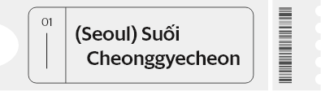
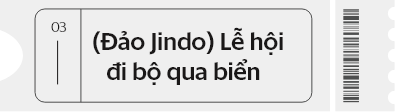
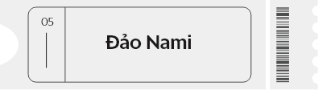
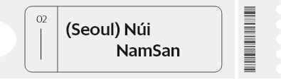
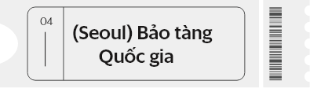
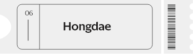

02 OSAKA
Người xa lạ
như từng quen
Không giống Tokyo vội vàng, Osaka nổi tiếng với sự thân thiện của người dân địa phương. Nét phóng khoáng của con người miền Tây Nhật Bản chào đón bạn với lòng hiếu khách chân tình.
2019
Năm nay, lịch nghỉ lễ sẽ nhiều hơn mọi năm. Vì vậy, từ bây giờ hãy lên kế hoạch du lịch cho cả nhà để giành vé rẻ ngay thôi!
01 TOKYO
“Mối tình đầu
của tôi”
Thành phố này mang một sức hút kỳ lạ, nếu Tokyo là một cô gái thì đó sẽ là mối tình đầu của rất nhiều người. Truyền thống nhưng hiện đại, giản dị nhưng tinh tế, trầm lắng nhưng thú vị. Chẳng ai có thể kìm lòng yêu thương. Gặp gỡ bao lâu cũng là ngắn ngủi.
Vietjet có đường bay Hà Nội – Tokyo mỗi ngày giá chỉ từ 1,999,000 đồng/chiều (*) và sẽ mở Tp.HCM/ Đà Nẵng – Tokyo dự kiến tháng 6/2019
Điểm ngắm hoa anh đào đẹp nhất tại Tokyo. Nơi đây có diện tích rộng lớn với hơn 1500 cây anh đào khiến nhiều du khách trầm trồ.
Là nơi thờ phụng vị Thiên hoàng Minh Trị. Ngôi đền được bao bọc bởi những khu rừng rậm rộng lớn mang đến những giây phút thư giãn yên tĩnh hiếm hoi trong thành phố náo nhiệt.
Khu chợ cá sầm uất và lớn nhất thế giới.
Khi đèn được bật đỏ, khách bộ hành từ lề đường tràn ra giao lộ giống như những viên bi tràn ra từ chiếc hộp.
Tới Tokyo thưởng vị nguyên bản của ẩm thực Nhật để có thể cảm nhận chiều sâu nét đẹp văn hoá đằng sau từng món ăn.
Ebisu là nơi ăn uống nổi tiếng ở Tokyo với món thịt nướng, rau, lẩu, sashimi…và nhiều thức uống.

02 OSAKA
Người xa lạ
như từng quen
Không giống Tokyo vội vàng, Osaka nổi tiếng với sự thân thiện của người dân địa phương. Nét phóng khoáng của con người miền Tây Nhật Bản chào đón bạn với lòng hiếu khách chân tình.
Tòa thành biểu tượng của thành phố.
Ngôi đền cổ nhất Nhật Bản.
Khu mua sắm nổi tiếng nhất Osaka và Nhật Bản.
Địa điểm ăn chơi nổi tiếng và lớn nhất ở Osaka.
Osaka có nền ẩm thực lâu đời và nổi tiếng, được mệnh danh là "nhà bếp quốc dân", hay "thủ đô ăn uống" ở Nhật. Tại đây cũng có nhiều khu ẩm thực nhưng nổi bật trong đó là quận Dotonbori.
Người Osaka rất quan tâm và đam mê ẩm thực, thuật ngữ "kuidaore" cũng từ nơi đây mà ra, có nghĩa là "ăn đến không thể nữa".
03 Tp.HCM
Phú Quốc
HongKong:
“Combo” hoàn hảo
cho những chuyến đi
in dấu tuổi trẻ.
Thế giới ngoài kia còn bao điều mới lạ, đó là hòn đảo ngọc Phúc Quốc quyến rũ, đó là HongKong hiện đại đã từng in dấu tuổi thơ của biết bao người trong những bộ phim.

04 Hàn Quốc
Dẫn lối về yêu thương
Dù chưa bao giờ đặt chân tới nhưng đất nước này đã trở thành “tình thương” của biết bao nhiêu người trẻ. Dù thế nào cũng muốn tới Hàn Quốc một lần để tìm về yêu thương: là thần tượng một thời; là lá vàng rơi, là món kimbap thường ăn… và là tuổi trẻ của chính mình.
|

Tận hưởng sự yên bình giữa đô thị đông đúc. |

Khi thủy triều xuống sâu, bạn có thể đi bộ từ đảo Jindo đến hòn đảo gần đó mà không cần dùng thuyền. |

Dành cho những người yêu thích điện ảnh Hàn Quốc. |
|

Bạn có thể đi cáp treo lên núi Nam San, hoặc thuê xe điện lên đài quan sát để ngắm toàn cảnh thủ đô Seoul từ trên cao. |

Chiêm ngưỡng những tác phẩm nghệ thuật có từ thế kỷ 6 và 7 cũng như xem các chương trình biểu diễn tại hội trường lớn. |

Là khu mua sắm, giải trí trẻ trung, sôi động nhất tại Seoul. |

Công viên quốc gia rộng bạt ngàn thẳng cánh cò bay, cảnh vật rất phong phú và nên thơ.
Bờ đá xốp qua bao tháng năm sóng biển chăm chỉ đều đặn đục đẽo bờ đá này thành hình dạng rất “nghệ”
Toà nhà cao nhất thế giới.
Ngôi làng nhỏ đầy màu sắc nằm ở Đài Trung với những họa tiết đơn giản nhưng hình thù đặc biệt, kết hợp với nhau vô cùng ngẫu nhiên và đầy màu sắc.
Hòn đảo xinh đẹp, gồm nhiều dãy núi dốc và được bao phủ bởi hệ thực vật nhiệt đới vô cùng phong phú.
Thiên đường “nắng vàng biển xanh và anh” của các cặp đôi
06 Cuối tuần rảnh
cứ qua Thái Lan,
ăn chơi rồi về!
Ngoài cảnh đẹp, con người dễ mến, nền văn hóa đa dạng, phong phú thì ẩm thực của Thái Lan là một điểm cộng không thể không nhắc đến. Sự hòa trộn tinh tế của thảo mộc, gia vị, phong cách chế biến đã giúp ẩm thực nơi đây luôn được yêu chuộng. Nhiều người thậm chí đã quay lại đất nước này chỉ để thưởng thức những món ăn.


Các điểm nên ghé:
Cung điện hoàng gia – Grand Palace:
là một trong những địa điểm du lịch văn hoá đáng lưu ý nhất ở thủ đô Bangkok
Chùa Phật Ngọc:
Ngôi chùa lớn nhất Bangkok
Chợ nổi trên sông ở Damnoen Saduak:
Dành cho du khách nào vừa thích mua sắm vừa thích… đi thuyền
07 Du lich
Singapore
Malaysia
Đôi khi có nhiều điều phải tự mình trải qua thì mới hiểu hết. Du lịch cũng vậy, hiếm có nơi nào ở Châu Á mang tới trải nghiểm của một đất nước đa văn hóa tốt hơn Singapore hay Malaysia. Ba dân tộc chính là Mã Lai, Hoa và Ấn sẽ đưa bạn đi từ ngạc nhiên này tới ngạc nhiên khác.
Các điểm nên ghé:
Universal Studios Singapore.
Crane Dance tại Resort Sentosa:
Đây là chương trình múa rối máy lớn nhất thế giới.
Merlion Park - Công viên sư tử biển.
Skyline Luge tại Sentosa:
Đường trượt đầu tiên xuất hiện ở Đông Nam Á
Khu vườn Garden by the bay.
Chùa Kek Lok Si:
Một trong những ngôi chùa đẹp nhất ở Malaysia.
Cao nguyên Cameron:
Thăm các đồn điền trồng chè lớn nhất ở Malaysia.
Kota Bharu:
Thành phố này nằm ở bờ biển phía Đông bán đảo Mã Lai có nhiều bảo tàng, nhà thờ Hồi giáo.
Perhentian:
điểm có những bãi biển đẹp, cát trắng và những rặng san hô được bảo tồn cẩn thận.
Batu:
là một trong 3 động đá vôi với các đền thờ của đạo Hindu vô cùng thú vị.
Ai bảo làm một kẻ mộng mơ tốn kém? Đi chơi là phải xài nhiều
tiền. Đây là món quà miễn phí dành cho bạn trong năm 2019, hỡi
những kẻ mộng mơ!
Vietjet đã dành tặng hàng triệu vé siêu tiết kiệm giá chỉ từ 0 đồng
(*) bay khắp Châu Ámỗi ngày tại website www.vietjetair.com
Đã có rất nhiều bạn trẻ đã nhanh tay rinh lấy cơ hội!
Còn bạn thì sao?
(*) Giá vé chưa bao gồm thuế và phí.
< Quay về đầu trang